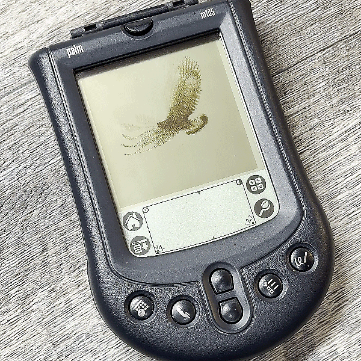

Palm Pilot Animator
A native, full-screen, black-and-white animation player for Palm OS, developed with the Palm m105 and m125. Runs on the Palm device.
The included Golden Eagle demo is 160 × 160 pixels. Tap a title to play; tap the image to pause or resume. Use a physical scroll button to return to the list.
Build and add animations
Open this project folder in Terminal. The setup requires Node.js 24, Python 3, libusb, and Rosetta 2 on Apple Silicon macOS.
sh tools/setup-local.sh sh tools/build-local.sh
The result is build/PalmAnimation.prc. To replace the library, put 160 × 160 black-and-white GIFs in assets/source/, install the Python requirements, pack the library, and rebuild. Packing replaces the entire animation library.
Install on a Palm
Follow the repository instructions to back up the device, connect via PalmConnect or native m125 USB, install, and verify the application. Updates require a saved PRC matching the installed version.
Full build and installation instructions · Hardware and build status